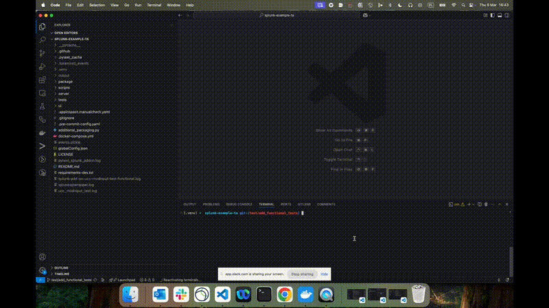
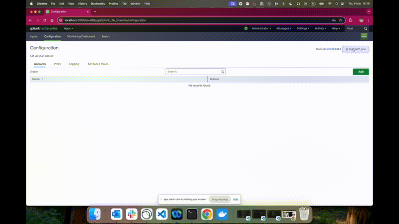
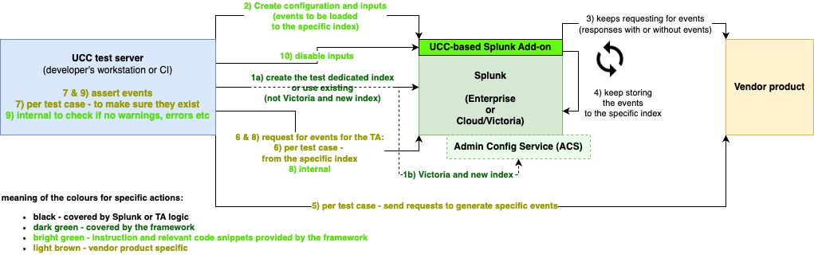

Overview¶
addonfactory-ucc-test (AUT) is an open-source testing framework for functional tests for UCC-based Splunk Add-ons which allows to test add-ons functonality for data ingestion. It automates add-ons configuration, events generation by vendor product side and assessment of ingested events providing platform for end to end tests.
Prerequisites¶
- Prepared basic setup for the add-on
- Vendor product configured for the add-on
- Splunk instance with add-on installed
- The setup is manually tested
- openapi.json saved to developer workstation
- docker installed and started
Installation¶
addonfactory-ucc-test can be installed via pip from PyPI:
pip install splunk-add-on-ucc-modinput-test
ucc-test-modinput --version
How can I run existing tests?¶
If you just want to run existing functional tests developed with use of the framework:
-
make sure the prerequisites are met and addonfactory-ucc-test is installed
-
export environment variables that describe your Splunk instance and the one specific for add-on you want to test (they should be described in
ucc_modinput_functional/README.md)

Writing all tests from scratch¶
Building a comprehensive test suite requires careful planning and adherence to best practices. Following paragraphs outlines the key aspects of starting from scratch, including the Design Principles that guide test architecture, the Test Scenarios that ensure coverage, important considerations Before You Write Your First Line of Code, and best practices When You Write Your Tests.
That is a lot to read.
You want to start small and simple?
Check our Hello World example first.
Hello World example¶
This, step by step, instruction uses Splunk_TA_Example to show how you can create end to end, functional, modinput tests for your add-on.
If you want to make a lab exercise, clone the repository to your workstation and create dedicated directory for the tests (eg. splunk-example-ta-test), so it can look like:
.
├── splunk-example-ta
└── splunk-example-ta-test
Satisfy prerequisites¶
Open splunk-example-ta/ in terminal.
Click to check where we are with the prerequisites
-
Prepared basic setup for the add-on
-
Vendor product configured for the add-on
-
Splunk instance with add-on installed
-
The setup is manually tested
-
-
openapi.json saved to developer workstation
-
docker installed and started
Example TA for Splunk comes with script that automates environment setup.
The script requires docker, so make sure that docker installed and started.
Click to check where we are with the prerequisites
-
Prepared basic setup for the add-on
-
Vendor product configured for the add-on
-
Splunk instance with add-on installed
-
The setup is manually tested
-
-
openapi.json saved to developer workstation
-
docker installed and started
Run following script
./scripts/run_locally.sh
-
server-example-ta that exposes
eventsendpoint on port 5000 -
splunk-example-ta that is Splunk instance exposing standard ports (we’ll be interested in 8000 - web and 8089 - management port) with example TA installed.
Click to check where we are with the prerequisites
-
Prepared basic setup for the add-on
-
Vendor product configured for the add-on
-
Splunk instance with add-on installed
-
The setup is manually tested
-
-
openapi.json saved to developer workstation
-
docker installed and started
There is another script that creates Example TA configuration and inputs:
./scripts/local_testing_setup.sh
You can verify both scripts results by:
-
opening the splunk instance: http://localhost:8000
-
signing in (admin / Chang3d!)
-
checking configuration and inputs
Click to check where we are with the prerequisites
-
Prepared basic setup for the add-on
-
Vendor product configured for the add-on
-
Splunk instance with add-on installed
-
The setup is manually tested
-
-
openapi.json saved to developer workstation
-
docker installed and started
Open configuration and download it to splunk-example-ta-test/ directory using OpenAPI.json button.
Click to check where we are with the prerequisites
-
Prepared basic setup for the add-on
-
Vendor product configured for the add-on
-
Splunk instance with add-on installed
-
The setup is manually tested
-
-
openapi.json saved to developer workstation
-
docker installed and started
You’ve got openapi.json that will be used in following steps. Moreover, you confirmed that you’ve got all you need to create necessary environment for development. You can delete docker containers
docker rm -f server-example-ta splunk-example-ta
./scripts/run_locally.sh
Note: The containers recreation is just one of a few options to prepare the environment for development. If you are not interested in having clean instance, you may consider:
-
inputs deactivation only
-
inputs and configuration deletion
-
etc.
init¶
Open splunk-example-ta-test/ directory in terminal. There should be openapi.json file downloaded as a part of satisfying prerequisities.
Install addonfactory-ucc-test and make sure it is installed
pip install splunk-add-on-ucc-modinput-test
ucc-test-modinput --version
ucc-test-modinput init --openapi-json openapi.json
.
├── swagger_client
│ ├── api
│ └── models
└── tests
└── ucc_modinput_functional
├── splunk
│ └── client
└── vendor
└── client
Hint: If you use version control system such as git, you don’t want to keep there swagger_client/ that will be generated for you from openapi.json by ucc-test-modinput.
Set environment variables for your Splunk instance.
export MODINPUT_TEST_SPLUNK_HOST=localhost
export MODINPUT_TEST_SPLUNK_PORT=8089
export MODINPUT_TEST_SPLUNK_USERNAME=admin
export MODINPUT_TEST_SPLUNK_PASSWORD_BASE64=$(ucc-test-modinput base64encode -s 'Chang3d!')
Run few auto-generated tests
pytest tests/ucc_modinput_functional
We will be interested in splunk-example-ta-test/tests/ucc_modinput_functional/ when working on following points of the instruction
.
├── README.md
├── __init__.py
├── defaults.py
├── splunk
│ ├── __init__.py
│ ├── client
│ │ ├── __init__.py
│ │ ├── _managed_client.py
│ │ ├── client.py
│ │ └── configuration.py
│ ├── forges.py
│ └── probes.py
├── test_settings.py
└── vendor
├── __init__.py
├── client
│ ├── __init__.py
│ ├── client.py
│ └── configuration.py
├── forges.py
└── probes.py
test_ta_logging - your first test¶
We want to have log level set to DEBUG for all of the tests we will write.
As the log level will be so common, we can add it to defaults.py
TA_LOG_LEVEL_FOR_TESTS = "DEBUG"
We will create appropriate test, to make sure log level is changed to DEBUG.
Let’s have dedicated file to test modifications in addon configuration - test_configuration.py. Move piece of code for log level from test_settings.py to test_configuration.py and adopt.
The code we are to use from test_settings.py
@attach(forge(set_loglevel, loglevel="CRITICAL", probe=wait_for_loglevel))
def test_valid_loglevel(splunk_client: SplunkClient, wait_for_loglevel: bool) -> None:
assert wait_for_loglevel is True
The code how it should look like in test_configuration.py
@bootstrap(
forge(
set_loglevel,
loglevel=defaults.TA_LOG_LEVEL_FOR_TESTS,
probe=wait_for_loglevel,
)
)
def test_ta_logging(splunk_client: SplunkClient) -> None:
assert (
splunk_client.get_settings_logging()["loglevel"]
== defaults.TA_LOG_LEVEL_FOR_TESTS
)
from splunk_add_on_ucc_modinput_test.functional.decorators import (
bootstrap,
forge,
)
from tests.ucc_modinput_functional.splunk.forges import (
set_loglevel,
)
from tests.ucc_modinput_functional.splunk.probes import (
wait_for_loglevel,
)
from tests.ucc_modinput_functional.splunk.client import SplunkClient
from tests.ucc_modinput_functional import defaults
splunk-example-ta-test/
pytest -v tests/ucc_modinput_functional/test_configuration.py
tests/ucc_modinput_functional/test_configuration.py::test_ta_logging PASSED [100%]
test_accounts - first, this addon-specific, test¶
We want to make sure account is created in addon configuration.
Account configuration requires server API key. That is configuration relevant to server-example-ta - vendor product. API key is a credential. We would like to keep it as non-plain text environment variables:
export MODINPUT_TEST_EXAMPLE_API_KEY_BASE64=$(ucc-test-modinput base64encode -s 'super-secret-api-token')
We need to document that for whoever will use our test. Open splunk-example-ta-test/tests/ucc_modinput_functional/README.md and add relevant information there.
Alongside with environment variables for Splunk, export API key for server-example-ta:
```console
export MODINPUT_TEST_EXAMPLE_API_KEY_BASE64=$(ucc-test-modinput base64encode -s 'super-secret-api-token')
```
splunk-example-ta-test/tests/ucc_modinput_functional/vendor/client/configuration.py, make sure the key is read from the variable and expose for use:
class Configuration(VendorConfigurationBase):
def customize_configuration(self) -> None:
self._api_key = utils.get_from_environment_variable(
"MODINPUT_TEST_EXAMPLE_API_KEY_BASE64",
string_function=utils.Base64.decode,
)
@property
def api_key(self) -> Optional[str]:
return self._api_key
from typing import Optional
We will need to create an account for testing purposes. The framework provides generic methods for this, so search for create_account in splunk-example-ta-test/tests/ucc_modinput_functional/splunk/client/_managed_client.py.
You were already able to see (by test_ta_logging example) that test function is decorated with forge functions. Let’s create one for the account in splunk-example-ta-test/tests/ucc_modinput_functional/splunk/forges.py
def account(
splunk_client: SplunkClient,
vendor_client: VendorClient,
) -> Generator[Dict[str, str], None, None]:
account_config = {
"name": f"ExampleAccount_{utils.Common().sufix}",
"api_key": vendor_client.config.api_key,
}
splunk_client.create_account(**account_config)
yield dict(
account_config_name=account_config["name"]
)
from tests.ucc_modinput_functional.vendor.client import VendorClient
We’ve got all of the blocks ready now to build our test function. Open splunk-example-ta-test/tests/ucc_modinput_functional/test_configuration.py
@bootstrap(
forge(
set_loglevel,
loglevel=defaults.TA_LOG_LEVEL_FOR_TESTS,
probe=wait_for_loglevel,
),
forge(account),
)
def test_accounts(
splunk_client: SplunkClient,
account_config_name: str,
) -> None:
actual_account = splunk_client.get_account(account_config_name)
assert actual_account is not None
from tests.ucc_modinput_functional.splunk.forges import account
We are ready to run test_accounts:
pytest -v tests/ucc_modinput_functional/test_configuration.py::test_accounts
tests/ucc_modinput_functional/test_configuration.py::test_accounts PASSED
test_inputs to make sure data is comming¶
We want to make sure input is created, data is ingested and input is deactivated. Goal is to have it available for troubleshooting if needed but we don’t want to keep the Splunk instance too busy with inputs active once events necessary for tests were already ingested.
Let’s find relevant methods to create and deactivate inputs in splunk-example-ta-test/tests/ucc_modinput_functional/splunk/client/_managed_client.py – create_example and update_example.
When creating input, we’ll use some default value for interval. Add following to defaults.py:
INPUT_INTERVAL = 60
In case of inputs, we want to be sure data is coming to specific index, source related to just created input and after the input gets created.
Whatever needs to happen before test execution, needs to be added before yield (test setup). yielded are values used for tests, other forges, probes, etc. What happens after, needs to be added after yield (teardown).
Let’s add example_input forge containing all the knowledge documented above to tests/ucc_modinput_functional/splunk/forges.py:
def example_input(
splunk_client: SplunkClient,
*,
account_config_name: str, # was defined in account forge
) -> Generator[Dict[str, str], None, None]:
name = f"ExampleInput_{utils.Common().sufix}"
index = splunk_client.splunk_configuration.dedicated_index.name
start_time = utils.get_epoch_timestamp()
splunk_client.create_example(name, defaults.INPUT_INTERVAL, index, account_config_name)
input_spl = (
f'search index={index} source="example://{name}" '
f"| where _time>{start_time}"
)
yield dict(input_spl_name=input_spl)
splunk_client.update_example(name, disabled=True)
from splunk_add_on_ucc_modinput_test.common import utils
from tests.ucc_modinput_functional import defaults
Once some configuration is added, modified or deleted and effect is not immediate, we use probes to wait with further steps until effects occur. Open tests/ucc_modinput_functional/splunk/probes.py and add events_ingested:
def events_ingested(
splunk_client: SplunkClient, input_spl_name: str, probes_wait_time: int = 10
) -> Generator[int, None, None]:
while True:
search = splunk_client.search(searchquery=input_spl_name)
if search.result_count != 0:
break
yield probes_wait_time
Input configuration requires account configuration that was tested in previous section. Moreover, just like for all the other tests, we want to make sure log level is set to default.
Let’s have dedicated test file for inputs - test_inputs.py in tests/ucc_modinput_functional/ with test_input:
@bootstrap(
forge(
set_loglevel,
loglevel=defaults.TA_LOG_LEVEL_FOR_TESTS,
probe=wait_for_loglevel,
),
forge(account),
forge(
example_input,
probe=events_ingested,
)
)
def test_inputs(splunk_client: SplunkClient, input_spl_name: str) -> None:
search_result_details = splunk_client.search(searchquery=input_spl_name)
assert (
search_result_details.result_count != 0
), f"Following query returned 0 events: {input_spl_name}"
utils.logger.info(
"test_inputs_loginhistory_clone done at "
+ utils.convert_to_utc(utils.get_epoch_timestamp())
)
test_configuration.py and few new:
-
from splunk_add_on_ucc_modinput_test.common import utils -
example_inputadd to imports fromtests.ucc_modinput_functional.splunk.forges -
events_ingestedfromtests.ucc_modinput_functional.splunk.probes
Run test_inputs:
pytest -v tests/ucc_modinput_functional/test_inputs.py::test_inputs
tests/ucc_modinput_functional/test_configuration.py::test_accounts PASSED
… want to see more examples?¶
Check the tests implementation for Example TA.
troubleshooting¶
-
This tutorial uses splunk-example-ta, so consider checking documentation for this project when facing any unexpected error.
-
In case of
npm error code E401 npm error Incorrect or missing password. ...error, please move your~/.npmrcfile to~/.npmrc.backup:mv ~/.npmrc ~/.npmrc.backup
Design principles¶
The addonfactory-ucc-test framework follows principles in an order based on importance:
Building blocks¶
The addonfactory-ucc-test framework consists of following building blocks:
-
addonfactory-ucc-test that contains:
-
ucc-test-modinputCLI tool used to initialise the tests (creates relevant directories, files and initial test; one time action), generate add-on SDK and other supporting actions (text encryption and decryption) -
addonfactory-ucc-test/functionalpytest plugin used to extend pytest functionality to support end-to-end functional tests
-
-
supporting artifacts:
-
ucc_modinput_functionaltests inSplunk Add-on for Example -
this documentation
-
Concepts to use and rules to follow¶
Framework comes with libraries used to deal with Splunk (Enterprise as well as Cloud), UCC-related functionalities and common actions.
There are following concepts used in the framework as well as rules add-on developer should follow:
-
Vendor product-related and add-on specific functionalities are left to the developer to deal with
-
test functions should be used just to assert actual vs expected values
-
test functions are wrapped by forge decorators that define setup and teardown tasks
-
forge can yield
Dict[str,Any]. Key becomes globally available variable that refers to relevant value -
probe function can be defined for forge to optimise setup time
-
forge functions are executed in a sequence as they appear - that means setup tasks are executed in a sequence of appearance while tear down tasks are executed in reversed order
-
forges decorator allows to group forge tasks that can be executed parallely
-
bootstrap decorators group forge tasks that are common for many tests
-
attach decorators group forge tasks that are specific for certain test
Note: Order of importance is discussed separately.
Performance¶
-
bootstrap makes sure setup and teardown tasks are executed just once, no matter for how many tests they are required.
-
probes when applied for setup tasks, makes setup task is finished as soon as expected state is achieved.
-
forges allows to parallelise independent tasks.
Complexity¶
The framework is thought the way, to be able to address even the most complicated Splunk add-ons. To achieve this goal, each forge should cover just one functionality. This way it becomes atomic. Atomic components can be connected, related or group flexible.
Data isolation¶
There are certain ways data can be isolated:
-
dedicated index is created for each test run by default and it is highly recommended to use the index. Moreover, AUT provides a functionality that allows to create custom indexes if needed
-
attach decorator allows to isolate specific tests so time range can be defined for splunk events
-
source of the event allows to identify input
-
unique test id can be used to distinguish between specific tests and test runs
Supported platforms¶
This framework is supported on the most popular workstations (MacOS, Linux, Windows) as well as CIs (GitHub, GitLab).
Test scenarios¶
General test cases are described. There are scenarios for each and relevant concepts that should be used.
Note: all forge tasks should be treated as bootstrap unless explicitly defined as attach
Note: if forge term is used, that generally refers to setup step unless explicitly defined as teardown
Basic scenario¶
We want to ingest some general events for few inputs and vendor product is talkative enough to expose the event within seconds or few minutes.
-
Increase log level to DEBUG (forge)
-
Create configuration (forge; yield configuration name - will be used for input)
-
Create inputs that depend on just created configuration (forge with probe - will be used to wait; yield SPL query that should contain at least index, source and start time information)
-
Wait till events are indexed (probe; use SPL query)
-
Test - assert event/actual values are as expected (use SPL query; assert returned values against expected values)
-
Disable inputs (forge teardown)
-
Decrease log level to initial value (forge teardown)
Isolate data in indexes¶
Note: this case is just an extension of basic and as such, just concepts that touches the differences will be described
Specifics of an add-on considered in this scenario does not allow to distinguish which input was used to ingest specific event.
Hint: When constructing tests for this kind of add-on, you want to have dedicated index for each input
-
Increase log level to DEBUG
-
Create (
forgesas following can be done independently)-
configuration
-
indexes (forge per index; yield index name - will be used for input)
-
-
Create inputs with reference to just created configuration and indexes
-
Wait
-
Test
-
Disable inputs
-
Decrease log level
Test proxies¶
Note: this case is just an extension of basic and as such, just concepts that touches the differences will be described
We want to be sure the add-on can be configured to use proxy if needed.
Hint: Proxy configuration is general for specific add-on, so if defined it will be used for all configuration entries as well as inputs.
When constructing this kind of tests you want to isolate them that can be achieved by using attach decorator that would group following tasks
-
Increase log level to DEBUG
-
Configure proxy or disabled if we want to test without proxy configured (
attacheto be sure all following forge tasks are in the context of this configuration)-
Create configuration - we want to be sure proxy configuration is applied to it, especially if connection to vendor product is established to validate configuration corectness
-
Create inputs
-
Wait
-
Test
-
Disable inputs
-
-
Decrease log level
Trigger events generation¶
We want to ingest some general events for an input and vendor product needs to be triggered to generate the events first.
-
Increase log level to DEBUG (forge)
-
Following steps can be executed independently, before relevant input is created (forges)
-
Create configuration (forge; yield configuration name - will be used for input)
-
Trigger vendor product to generate event (forge; yield timestamp)
-
-
Create input that depend on just created configuration and timestamp (forge with probe - will be used to wait; yield SPL query that should contain at least index, source and start time information)
-
Wait till events are indexed (probe; use SPL query)
-
Test - assert event/actual values are as expected (use SPL query; assert returned values against expected values)
-
Disable input (forge teardown)
-
Decrease log level to initial value (forge teardown)
Configure vendor product¶
Note: this case is just an extension of triggering events generation and as such, just concepts that touches the differences will be described
Vendor product needs to be configured before it can be triggered to generate the events. The vendor product configuration has to be roll back then.
-
Increase log level to DEBUG
-
Configure vendor product (forge; yield configuration name - it can be used later for configuration or input and the configuration teardown)
-
Before input is created
-
Create configuration
-
Trigger vendor product to generate event
-
-
Create input
-
Wait
-
Test
-
Disable input
-
Delete vendor product configuration (forge teardown)
-
Decrease log level
Eliminate dangling resources¶
Note: this case is just an extension of configuring vendor product and as such concepts that touches the differences will be described
It happens that teardown is not reached in the tests. There can be number of reasons - eg. developer interupts tests execution before teardown is reached.
We have to maintain hygiene in vendor product configuration to eliminate dangling resources.
Hint: We want to be able to distinguish configuration created for our tests from: 1. configuration used for other purposes, 2. configuration created for our tests but other time, 3. configuration created for our tests but by other test run - that may be a case in CI
All the steps are the same as for configuring vendor product, beside implementation of:
-
Configure vendor product:
-
Check list of configuration items and filter by names. Process only if name: 1. matches predefined pattern for the tests, 2. timestamp shows the configuration is older than predefined threshold. Delete the resources.
-
When creating the configuration, make sure its name 1. matches predefined pattern, 2. contains timestamp and 3. contains test id.
-
Before you write your first line of code¶
AUT is a powerful toolset.
Add-on developer experience is the most important for us and we don’t want you to get lost in what is available for you.
Learn from Splunk Add-on for Example¶
Before you start working on your own tests, check splunk-example-ta to get basic understanding of the example TA. Think how you would test it.
Open tests/ucc_modinput_functional and go through it in proposed below order to see how it is tested. Are your ideas addressed?
tests/ucc_modinput_functional¶
-
README.md- contains add-on specific information related to the functional tests -
defaults.py- contains predefined, the tests-specific, constant values -
vendor/- contains vendor product-specific code-
configuration.py- to read configuration from environment variables; it can be used later for vendor product-specific means (eg. triggering action that would generate event available for add-on to collect), add-on configuration or within test functions -
client.py- contains code used to communicate with vendor product
-
-
splunk/- contains add-on specific code-
client.py- contains code used to communicate with add-on REST API; relevant code snippets can be found in swagger_client README.md copied from there, pasted to the client file and adopted -
forges.py- contains functions responsible for creation and deletion of resources and configurations (forges);yieldin each forge, separates setup and teardown -
probes.py- contains functions validating specific conditions used to make sure that execution of a specific forge indeed resulted in creation of expected resource.
-
-
test_configuration.py- start simple, eg. from making sure the simplest case liketest_ta_loggingworks fine. Keep adding following tests for add-on configuration to make sure you are able to define building blocks that will be used for inputs -
test_inputs.py- you have proper configuration. There are still two things you need to confirm:-
Make sure vendor product is talkative enough to have always events available for your tests or you need to trigger events generation
-
Input forge should return spl query you will use in input probe as well as in test to get raw events for assertion
-
… also worth considering¶
There are components you may still want to add to your tests:
-
vendor/-
forges.py- use if you want to setup and teardown resources in vendor product -
probes.py
-
-
splunk/configuration.py- this file is to cover values not related to vendor product, such as proxy accounts
-
test_proxies.py- to test proxies. Proxy configuration is general for specific add-on, so if defined it will be used for all configuration entries as well as inputs. When constructing this kind of tests you want to isolate them that can be achieved by usingattachdecorator that would group following tasks:-
making sure proxy is defined as required (or disabled if we want to test without proxy configured)
-
relevant configuration creation - especially if validation is used that requires relevant connection to vendor product
-
input creation
-
etc.
-
-
test_validators.py- to test that add-on will not accept improper values for its configuration. -
etc.
Above is just a proposition that may be relevant for small to medium add-ons.
If you find your add-on more complex, feel free to organize the test structure the way you find the most convenient and efficient.
ucc-test-modinput init¶
Init command is created to save some of your efforts by doing boilerplate actions:
- generates swagger client supporting modules,
- creates unified tests file structure,
- bootstraps basic splunk and vendor clients together with configuration classes,
- initial tests with forges and probes required for them.
This command should be executed once before before any unified tests are created for the project.
-
Before invoking init command, please, make sure:
-
Run
initto have following directories generated for you:ucc-test-modinput init-
swagger_clientdirectory with supporting modules -
tests/ucc_modinput_functionaldirectory with relevant files and some UCC related tests.
-
Note: You may want to specify openapi.json file location - eg. if it is in Downloads:
ucc-test-modinput init --openapi-json ~/Downloads/openapi.json
ucc-test-modinput page for more
-
Set environment variables for your Splunk instance. Eg.:
export MODINPUT_TEST_SPLUNK_HOST=localhost export MODINPUT_TEST_SPLUNK_PORT=8089 export MODINPUT_TEST_SPLUNK_USERNAME=admin export MODINPUT_TEST_SPLUNK_PASSWORD_BASE64=$(ucc-test-modinput base64encode -s 'Chang3d!') -
Run the tests
pytest tests/ucc_modinput_functional
Note: If your add-on code contains customisations for out of the box components (such as logging or proxy), some tests may fail.

When you write your tests¶
Running ucc-test-modinput init provides a starting point for further development.
Start with the basic case even if you need to cover more complex test cases. This will allow you to ensure there is access from the development environment to the vendor product.
This paragraph contains hints that should be useful for your test development.
Keep checking the example for implementation details.
Vendor product¶
General hints¶
Vendor product specific code is entirely in developer’s hands. There are however some hints you may find useful:
-
Consult Product Documentation:
Begin with the official product documentation. These resources often include code samples and integration guides that can be directly applied to your tests, saving development time and effort. -
Explore Official Repositories:
Check vendor official repositories (eg. GitHub). These repositories might contain supporting libraries or example code that can aid in developing integrations. -
Leverage Package Indexes:
Utilize PyPI.org or equivalent package indexes for discovering SDKs and libraries that are specific to the vendor products. These SDKs can simplify the integration process and ensure compatibility. -
Utilize OpenAPI Specifications:
If available, use OpenAPI or equivalent specifications to create or generate client libraries for the vendor products. This can facilitate a more streamlined and automated integration process. -
Engage with Developer Communities:
Platforms like Reddit and StackOverflow are valuable for community support. You can find discussions, troubleshooting tips, and shared experiences related to integrating vendor products. -
Consult AI Tools:
Consider using AI services to assist with coding, integration challenges, or generating documentation. These tools can provide insights or generate code snippets that may enhance your framework.
Framework specific hints¶
It is highly recommended to stay consistent with Splunk specific code to have internally consistent and easier to maintain tests. To achieve it, consider following hints:
-
Follow
vendor/directory structure as described in the example TA -
Store credentials in environment variables and use
get_from_environment_variablefromsplunk_add_on_ucc_modinput_test.common.utilsto read the credentials- if environment variable is optional, use
is_optional=Trueparameter - eg.:
self.username = utils.get_from_environment_variable("MODINPUT_TEST_FOOBAR_USERNAME", is_optional=True)Nonewill be assigned toself.usernamein example as above-
if environent variable should be encoded, use relevant sufix to emphasize a fact it was done and use
string_functionparameter when callingget_from_environment_variablefunction - eg.:in example as above:self.token = utils.get_from_environment_variable("MODINPUT_TEST_FOOBAR_TOKEN_BASE64", string_function=utils.Base64.decode)-
_BASE64suffix is used to emphasize the password value should be base64 encoded -
string_functionis pointing to callable object that will do string transformation.
-
- if environment variable is optional, use
Splunk¶
Proper spl query construction is crucial for proper tests results and performance.
The spl query format looks like below:
search index={index_name} source={source_name_containing_input_name} {raw_event_specific_string} | where _time>{start_time}
-
index_name can be:
-
default - assigned to
splunk_client.splunk_configuration.dedicated_index.name -
dedicated - check data isolation principle or relevant test scenario for more
-
-
source_name_containing_input_name highly depends on add-on implementation; eg. for example add-on source part of the spl is defined as
source="example://{name}"(wherenameis for input name) -
raw_event_specific_string that can be skipped, if other values are sufficient, one or many strings that define uniquely raw event we are interested in
-
start_time - epoch timestamp should be used, however where timestamp is collected should be pick with special care. Check test scenarios to understand what potential options you’ve got. Timestamp of begginig of tests can be used as default:
start_time = utils.get_epoch_timestamp()
When your tests are ready¶
-
Run tests:
pytest tests/ucc_modinput_functional/(and fix tests if needed) -
Document add-on specific information related to the functional tests in
tests/ucc_modinput_functional/README.md. Particularly - how vendor product should be prepared (or reference to relevant documentation) as well as what vendor and test specific environment variables should be exported -
Commit and push your modifications to code repository. Ignore
output/andswagger_client/directories that are generated byucc-gen genanducc-test-modinput genrespectively.
ucc-test-modinput CLI tool¶
ucc-test-modinput CLI is a supporting tool.
It comes with following arguments:
-
--helpor-h; shows help message and exits ; you can use it for arguments as well - eg.ucc-test-modinput base64encode -hwill show help message forbase64encode -
--version- shows program’s version number and exit -
base64encode- converts complex string (due to special characters or structure) to base64 string-
--stringor-s;-s [string you want to encode]- eg.base64encode -s ThisIsMyPassword -
--fileor-f;-f [text file path; string from the file will be encoded]- eg.ucc-test-modinput base64encode -f ~/client_secret.json
-
-
base64decode -s [string you want to decode]- eg.ucc-test-modinput base64decode -s VGghczEkTXlQQHNzdzByZA== -
gen- does two things: 1. creates add-on SDK from given openapi.json, 2. creates splunk client module and checks if existing (ucc_modinput_functional/splunk/client/client.py) is the same-
--openapi-jsonor-o;-o [path to openapi.json / source file ]- default value isoutput/*/appserver/static/openapi.json; refer to UCC documentation to learn more where you can find this document -
--client-codeor-c;-c [path to client code / target directory]- default value is set to repo root directory ; this is whereswagger_clientdirectory will be saved or overwriten if some exists already. The directory contains client code for TA REST API andswagger_client/README.mdfile that documents the client API -
--tmpor-t;-t [path to directory where temporary files are stored]- default value is set to/modinput/subdirectory of directory used for temporary files -
--platformor-p- not used by default ;--platformflag that can be used to run swaggerapi/swagger-codegen-cli-v3 docker image -
--skip-splunk-client-check- exisitng splunk client will not be checked aginst consistency with swagger client that may lead to inconsistent state of splunk client; this isgenspecific flag and does not exists forinit -
--force-splunk-client-overwritten- existing splunk client will be backup and overwritten by new one; this isgenspecific flag and does not exists forinit
-
-
init- initialize modinput tests (you can read more on that here) and runsgento have add-on SDK created ; none additional argument is required for the initialization step, so argument list is as forgen(excluding--skip-splunk-client-checkand--force-splunk-client-overwritten)
addonfactory-ucc-test pytest plugin¶
addonfactory-ucc-test plugin extendst pytest to support end-to-end Splunk add-ons flow.
It comes with libraries that cover standard Splunk (Enterprise and Cloud) functionalities as well as general UCC functionalities, such as:
-
indexes creation
-
searching
-
common configuration and inputs management
Relevant environment variables have to be defined to benefit from the functionalities.
The plugin requires vendor product specific and add-on specific functionalities to be covered by add-on developer. This includes specifying environment variables that include information about vendor product address, user that should be used to generate events or user that should be used for integration.
Expected environment variables¶
Information about Splunk has to be given in relevant environment variables:
-
MODINPUT_TEST_SPLUNK_HOST - Splunk Enterprise IP or domain address or Splunk Cloud domain address (eg.
127.0.0.1,localhostortest.splunkcloud.com).httpsprotocol is used for connection and ssl verification is skipped to support developer and test Splunk instances. -
MODINPUT_TEST_SPLUNK_PORT - management port (
8089in most cases) -
MODINPUT_TEST_SPLUNK_USERNAME - Splunk admin username (
adminin most cases) that will be used for tests -
MODINPUT_TEST_SPLUNK_PASSWORD_BASE64 - base64 encoded Splunk user used for tests password (eg.
Q2hhbmczZCE=as a result ofucc-test-modinput base64encode -s 'Chang3d!'; check ucc-test-modinput documentation for more) -
(optional) MODINPUT_TEST_SPLUNK_DEDICATED_INDEX - existing index name that should be used to write test events. If not defined, dedicated index is created for each test run and used for the same purpose.
-
following variables are required only if Splunk Cloud is used for tests and any index needs to be created for tests:
-
MODINPUT_TEST_SPLUNK_TOKEN_BASE64 - base64 encoded Splunk Cloud authentication token
-
MODINPUT_TEST_ACS_SERVER - ACS server (eg.
https://admin.splunk.com,https://staging.admin.splunk.comorhttps://admin.splunkcloudgc.com) -
MODINPUT_TEST_ACS_STACK - ACS stack, that in majority of the cases will be just part of Splunk Cloud domain address (eg. for
ucc-test.stg.splunkcloud.com, ACS server would behttps://staging.admin.splunk.comand ACS stackucc-test)
-
Action diagram¶

Plugin arguments¶
addonfactory-ucc-test pytest plugin comes with following arguments:
-
--sequential-execution- use no threading (for debugging) -
--do-not-fail-with-teardown- do not fail test if test’s teardown fails. By default a test will fail if any of its forges teardowns fail, even if the test itself passed. -
--do-not-delete-at-teardown- do not delete created resoueces at teardown. This flag is for debug purposes and should be handled by developer if needed. For example, based on this flag developers can add alternative code to forges’ teardowns, to disable inputs instead of deleting them in order to study inputs configurations after tests execution. -
--number-of-threads=[NUMBER_OF_THREADS]- number of threads to use to execute forges. Allowed range: [10, 20]. Default value: 10. -
--probe-invoke-interval=[PROBE_INVOKE_INTERVAL]- interval in seconds used to repeat invocation of yes/no type of probes. Allowed range: [1, 60]. Default value: 5. -
--probe-wait-timeout=[PROBE_WAIT_TIMEOUT]- maximum time in seconds given to a single probe to turn positive. Allowed range: [60, 600]. Default value: 300. -
--bootstrap-wait-timeout=[BOOTSTRAP_WAIT_TIMEOUT]- maximum time in seconds given to all bootstrap tasks to finish. Allowed range: [300, 3600]. Default value: 1800. -
--attached-tasks-wait-timeout=[ATTACHED_TASKS_WAIT_TIMEOUT]- maximum time in seconds given to finish all tasks attached to a single test. Allowed range: [60, 1200]. Default value: 600. -
--completion-check-frequency=[COMPLETION_CHECK_FREQUENCY]- frequency to check that bootstrap or attached tasks bundle has finished to execute. Allowed range: [1, 30]. Default value: 5.
Contributing Guidelines¶
We welcome contributions from the community! This guide will help you understand our contribution process and requirements.
Development guidelines¶
- Small PRs (blogpost)
- When fixing a bug, include a test that reproduces the issue in the same pull request (the test should fail without your changes)
- If you are refactoring, ensure adequate test coverage exists for the target area. If coverage is insufficient, create tests in a separate pull request first. This approach provides a safety net for validating current behavior and simplifies code reviews.
Build and Test¶
Prerequisites:
- Poetry 1.5.1. Installation guide
Build a new local version:
poetry build
Unit tests¶
poetry run pytest tests/unit
Linting and Type-checking¶
ucc-gen uses the pre-commit framework for linting and type-checking.
Consult with pre-commit documentation about what is the best way to install the software.
To run it locally:
poetry run pre-commit run --all-files
Documentation changes¶
Documentation changes are also welcome!
To verify changes locally:
poetry run mkdocs serve -a localhost:8001
Issues and bug reports¶
If you’re seeing some unexpected behavior with AUT, create an issue on GitHub. You can click on “New Issue” and use the template provided.
Pull requests¶
We love to see pull requests!
PR Title¶
We follow Conventional Commits for PR titles. The title format is crucial as we squash commits during merge, and this PR title will be used in the release notes (for feat and fix types). Here’s a short TL;DR of the format:
<type>(<scope>): <description>
Types:
- feat: New feature (user facing)
- fix: Bug fix (user facing)
- docs: Documentation changes (user facing)
- style: Code style changes (formatting, etc.)
- refactor: Code changes that neither fix bugs nor add features
- perf: Performance improvements
- test: Adding or updating tests
- chore: Maintenance tasks
Example: feat(ui): add new input validation for text fields
PR Description¶
Includes:
- Motivation behind the changes (any reference to issues or user stories)
- High level description of code changes
- Description of changes in user experience if applicable.
- Steps to reproduce the issue or test the new feature, if possible. This will speed up the review process.
After submitting your PR, GitHub will automatically add relevant reviewers, and CI checks will run automatically.
Note:
semgrepandfossachecks might fail for external contributors. This is expected and will be handled by maintainers.
Release flow¶
The instructions below utilize the GitHub CLI tool, which you can install via HomeBrew:
brew install gh
gh auth login
- The default development branch is
develop. Use this branch for creating pull requests (PRs) for your features, fixes, documentation updates, etc. PRs to thedevelopbranch should be merged using the squash option on GitHub. - When it’s time for a release (handled by the UCC team), create a PR from
developtomainusing the following commands:
gh pr create --title "chore: merge develop into main" --body "" --head develop --base main
# set automerge with merge commit to avoid accidentally squashing PR
gh pr merge develop --auto --merge
- Ensure CI passes and await team review.
- PR should be merged using merge commit option in GitHub (already included in the command)
- Releases are made automatically (both on GitHub and PyPI), and a bot will push a commit to
mainwith all necessary changes - If necessary, update release notes and CHANGELOG.md accordingly to the content of the release.
- If any issue was solved by this release, remove waiting-for-release label from it and then close the issue.
- After the release, backport the bot’s changes to the
developbranch:
gh pr create --title "chore: merge main into develop" --body "" --head main --base develop
# set automerge with merge commit to avoid accidentally squashing PR
gh pr merge main --auto --merge
-
If a release encounters issues requiring a quick bug fix (handled by the AUT team):
- Create a PR to the main branch with the fix, including tests that reproduce and then fix the issue.
- Ensure CI passes and await team review.
- Merge the PR using the merge commit option on GitHub.
- Backport the bug fix PR to the develop branch.
-
After release is done, announce it to community on slack channels:
Changelog¶
1.0.0 (2025-05-27)¶
Troubleshooting¶
CI issues¶
While installing the framework from Git instead of PyPI, you may encounter the following error:
HangupExceptionThe remote server unexpectedly closed the connection
....
The following error occurred when trying to handle this error:
HangupException
git@github.com: Permission denied (publickey)
....
To resolve that, please install the package using PyPI. If that is not possible, and you use addonfactory-workflow-addon-release, please make sure you’re using at least v4.19 version.